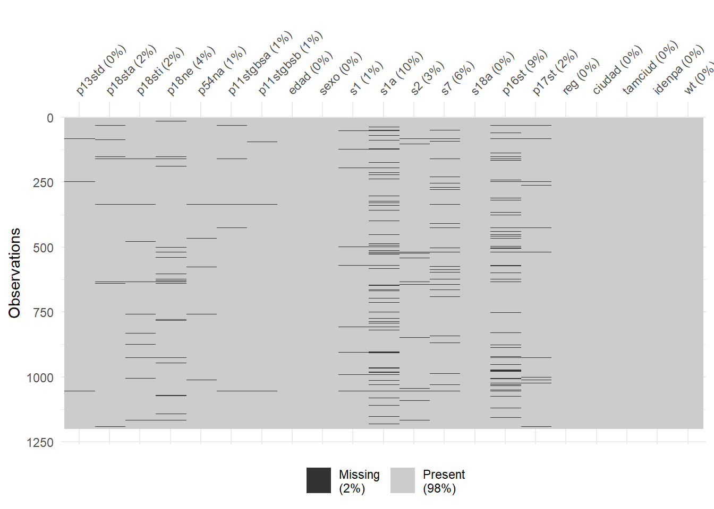

Código
lapply(c("tidyverse", "readxl", "writexl", "modelsummary", "haven", "janitor", "labelled", "forcats"), library,
character.only = TRUE)Este informe reconstruye el análisis de datos ejecutado para el proyecto de tesis
lapply(c("tidyverse", "readxl", "writexl", "modelsummary", "haven", "janitor", "labelled", "forcats"), library,
character.only = TRUE)En esta sección se carga el conjunto de datos del Latinobarómetro 2023 y se realiza un preprocesamiento básico para su análisis.
lb2023 <- haven :: read_sav("E:\\Bases de datos\\latinobarometro_datasets\\lb2023.sav")lb2023 <- lb2023 %>% mutate(across(where(is.character), trimws)) %>%
rename_with(~ gsub("[._[:space:]]+", "", tolower(.x)))La base de datos global contiene metadatos que describen las variables, como etiquetas y valores. Para explorar estos metadatos, se utiliza la función look_for del paquete labelled.
# 1. Exploración de los metadatos
lb2023_metadata <- look_for(lb2023) %>% as_tibble()
lb2023_metadata# 2. Exporta a Excel con writexl
writexl::write_xlsx(x = lb2023, path = file.path("Exports", "Tables", "lb2023.xlsx"))Extraemos las variables de interés en listas que podemos editar posteriormente. En este caso, se extraen las variables dependientes e independientes que se utilizarán en el análisis.
Podemos crear una lista de varibles dependientes clasificandolas segun su rol en nuestros modelos. Por ejemplo,principal_predictors son las variables principales que se espera que tengan un efecto significativo en la variable dependiente, mientras que sociodem_controls y other_controls son variables de control que se incluirán para ajustar el modelo y controlar por posibles confusores.
Con var_lists se agrupan todas las variables en una lista para facilitar su manejo y edición posterior, luego con all_of se seleccionan las variables de la base de datos previamente almacenadas en var_lists.
# Variable dependiente
dep_vars <- c("p13std") # Confianza en el Congreso
# Predictores principales (editables)
principal_predictors <- c(
"p18sta", # Problemas en la democracia
"p18sti", # La democracia soluciona problemas
"p18ne", # Poder judicial independiente
"p54na", # Tolerancia a la protesta
"p11stgbsa",# Satisfacción con la democracia
"p11stgbsb" # Satisfacción con la economía
)
sociodem_controls <- c(
"edad", # Edad
"sexo",
"s1", # Religión
"s1a", # Practica religiosa
"s2", # Clase social subjetiva
"s7", # Raza
"s18a" # Ocupación
)
# Otras variabels de control
other_controls <- c(
"p16st", # Eje izquierda–derecha
"p17st", # Cuán justa es la distribución de ingreso
"reg", # Región
## Variables asociadas al diseño muestral
"ciudad", # Ciudad
"tamciud", # Tamaño de la ciudad
"idenpa", # País
"wt" # Ponderación muestral
)
# Agrupar todo en una lista para fácil acceso
var_lists <- list(
dep_vars = dep_vars,
principal_predictors = principal_predictors,
sociodem_controls = sociodem_controls,
other_controls = other_controls
)
# Seleccionar todas las variables relevantes
lb2023_a <- lb2023 %>% select(
all_of(var_lists$dep_vars),
all_of(var_lists$principal_predictors),
all_of(var_lists$sociodem_controls),
all_of(var_lists$other_controls))lb2023_a <- lb2023_a %>%
mutate(
edad = as.numeric(edad) # conservar edad como numérica
) %>%
mutate(
across(
.cols = where(haven::is.labelled),
.fns = ~ haven::as_factor(.x, levels = "labels")
)
)Generamos una lista del universo de categorías ordinales que utiliza el latinobarometro en sus encuestas. Nos aseguramos que R reconozca estas variables como factores ordenados.
# Listas de niveles ordinales estándar
ord_foursteps <- c("Ninguna", "Poca", "Algo", "Mucha")
cs_subjective_ord <- c("Baja", "Media Baja", "Media", "Media Alta", "Alta")
justice_ord <- c("Muy injusta", "Injusta", "Justa", "Muy justa")
ord_satis <- c("Nada satisfecho", "No muy satisfecho", "Mas bien satisfecho", "Muy satisfecho")
ord_agree <- c("Muy en desacuerdo", "En desacuerdo", "De acuerdo", "Muy de acuerdo")
unknown_cat <- c("No sabe", "No contesta", "No aplicable", "No preguntada", "No sabe / No contesta")# Recodificar todas las variables ordinales de manera unificada:
lb2023_a <- lb2023_a %>%
mutate(
across(
.cols = where(is.factor),
.fns = ~ {
x_chr <- as.character(.x)
# Marcar datos desconocidos como NA
x_chr[x_chr %in% unknown_cat] <- NA
# Identificar y aplicar niveles
if (all(na.omit(x_chr) %in% ord_foursteps)) {
factor(x_chr, levels = ord_foursteps, ordered = TRUE)
} else if (all(na.omit(x_chr) %in% cs_subjective_ord)) {
factor(x_chr, levels = cs_subjective_ord, ordered = TRUE)
} else if (all(na.omit(x_chr) %in% justice_ord)) {
factor(x_chr, levels = justice_ord, ordered = TRUE)
} else if (all(na.omit(x_chr) %in% ord_satis)) {
factor(x_chr, levels = ord_satis, ordered = TRUE)
} else if (all(na.omit(x_chr) %in% ord_agree)) {
factor(x_chr, levels = ord_agree, ordered = TRUE)
} else {
# Devolver original si no coincide con ninguna escala
.x
}
}
)
)Procesamos por separado algunas variables especiales.
# Recodificación específica de p16st (eje izquierda–derecha) en un bloque aparte
lb2023_a <- lb2023_a %>%
mutate(
p16st = case_when(
grepl("^00", p16st) ~ 0L,
grepl("^10", p16st) ~ 10L,
p16st %in% as.character(1:9) ~ as.integer(as.character(p16st)),
TRUE ~ NA_integer_
)
)Finalmente, filtramos las observaciones a Perú
lb2023_pe <- lb2023_a %>% filter(idenpa == " Peru") En esta sección, se analiza univariadamente cada variable del dataset. Comprobamos que las variables categóricas tengan los niveles correctos y que las variables numéricas estén en el formato adecuado. Se identifican los valores perdidos y se proporciona un resumen de las variables.
library(skimr)
skimr :: skim(lb2023_pe) %>% as_tibble()library(naniar)
naniar :: vis_miss(lb2023_pe)
library(mice)
# 1. Identificar columnas con NA
cols_na <- names(which(colSums(is.na(lb2023_pe)) > 0))Clasificamos las variables según su tipo para aplicar métodos de imputación adecuados. Las variables numéricas, ordinales y categóricas se manejan de manera diferente en el proceso de imputación.
# 2. Clasificar variables
numeric_vars <- cols_na[sapply(lb2023_pe[cols_na], is.numeric)]
ordinal_vars <- cols_na[sapply(lb2023_pe[cols_na], is.ordered)]
categorical_vars <- cols_na[sapply(lb2023_pe[cols_na], function(x) is.factor(x) && !is.ordered(x))]Le decimos a R que en meth_vec vamos a definir los métodos de imputación para cada tipo de variable. Utilizamos make.method del paquete mice para crear un vector de métodos de imputación. Luego, asignamos el método adecuado a cada tipo de variable.
# 3. Definir métodos de imputación para MICE
meth_vec <- make.method(lb2023_pe[cols_na])
meth_vec[numeric_vars] <- "pmm" # Predictive Mean Matching para numéricas
meth_vec[ordinal_vars] <- "polr" # Proportional Odds Logistic Regression para ordinales
meth_vec[categorical_vars] <- "polyreg" # Regresión polinómica para nominalesEjecutamos el proceso de imputación multivariada utilizando la función mice. Especificamos el número de imputaciones (m = 10) y un valor de semilla para la reproducibilidad (seed = 123). La opción printFlag = FALSE suprime la salida de progreso.
# 4. Ejecutar imputación multivariada
imp_full <- mice(lb2023_pe[cols_na], method = meth_vec, m = 10, seed = 123, printFlag = FALSE)
# 5. Completar base con la primera imputación (puede cambiarse a pool)
lb2023_pe_imp <- lb2023_pe
lb2023_pe_imp[cols_na] <- complete(imp_full, 1)
# 6. Resumen rápido de columnas imputadas
tibble(
tipo = c("Numéricas", "Ordinales", "Nominales"),
n_variables = c(length(numeric_vars), length(ordinal_vars), length(categorical_vars))
)lb2023_pe <- lb2023_pe_imp
skimr :: skim(lb2023_pe) %>% as_tibble()Las regresiones logísticas ordinales resultan idóneas cuando la variable de interés toma valores ordenados (por ejemplo niveles de satisfacción o confianza) sin que la distancia entre ellos sea necesariamente constante. En tu caso, la confianza en el Congreso (p13std) se modela en función de un conjunto de predictores 𝑥, capturando el carácter ordinal de las categorías. Matemáticamente, para una variable 𝑌con 𝐾 niveles (1,2,…,𝐾) el modelo de probabilidades acumuladas se expresa como:
Para cada (k=1,,K-1):
\[ \Pr(Y \le k \mid x) = \frac{1}{1 + \exp\bigl(-(\alpha_k - x^\top\beta)\bigr)}. \]
Equivalentemente,
\[ \log\frac{\Pr(Y \le k \mid x)}{\Pr(Y > k \mid x)} =\alpha_k - x^\top\beta. \]
library(MASS) # polr()
library(broom) # tidy / glance
library(purrr) # map / imap
# Modelo 1: Sólo predictores principales
mod_ord1 <- polr(
p13std ~ p18sta + p18sti + p18ne + p54na + p11stgbsa + p11stgbsb,
data = lb2023_pe,
weights = wt,
Hess = TRUE
)
# Modelo 2: + controles sociodemográficos
mod_ord2 <- polr(
p13std ~ p18sta + p18sti + p18ne + p54na + p11stgbsa + p11stgbsb + edad + sexo + s2,
data = lb2023_pe,
weights = wt,
Hess = TRUE
)
# Modelo 3: + variables político-ideológicas y de contexto
mod_ord3 <- polr(p13std ~ p18sta + p18sti + p18ne + p54na + p11stgbsa + p11stgbsb +
edad + sexo + s2 +
p16st + p17st,
data = lb2023_pe,
weights = wt,
Hess = TRUE
)tab_ord1 <- tidy(mod_ord1, conf.int = TRUE) %>%
mutate(
OR = exp(estimate), # convierte log-odds en odds ratio
p.value = 2 * (1 - pnorm(abs(statistic))),
signif = case_when(
p.value < 0.001 ~ "***",
p.value < 0.01 ~ "**",
p.value < 0.05 ~ "*",
TRUE ~ ""
)
) %>% dplyr:: select(term, estimate, OR, std.error, statistic, p.value, signif, conf.low, conf.high)
tab_ord2 <- tidy(mod_ord2, conf.int = TRUE) %>%
mutate(
OR = exp(estimate), # convierte log-odds en odds ratio
p.value = 2 * (1 - pnorm(abs(statistic))),
signif = case_when(
p.value < 0.001 ~ "***",
p.value < 0.01 ~ "**",
p.value < 0.05 ~ "*",
TRUE ~ ""
)
) %>% dplyr :: select(term, estimate, OR, std.error, statistic, p.value, signif, conf.low, conf.high)
tab_ord3 <- tidy(mod_ord3, conf.int = TRUE) %>%
mutate(
OR = exp(estimate), # convierte log-odds en odds ratio
p.value = 2 * (1 - pnorm(abs(statistic))),
signif = case_when(
p.value < 0.001 ~ "***",
p.value < 0.01 ~ "**",
p.value < 0.05 ~ "*",
TRUE ~ ""
)
) %>% dplyr:: select(term, estimate, OR, std.error, statistic, p.value, signif, conf.low, conf.high)
#tab_ordx %>% as_tibble()`
# Mostrar tabla con gt (Quarto friendly)
library(gt)
tab_ord1 %>%
gt() %>%
tab_header(
title = md("**Tabla de resultados mod_ord1**"),
subtitle = md("Coeficientes (log-odds), OR, p-values y significancia")
) %>%
fmt_number(
columns = vars(estimate, OR, std.error, statistic, p.value, conf.low, conf.high),
decimals = 2
) %>%
cols_label(
term = "Predictor",
estimate = "Coef",
OR = "OR",
std.error = "SE",
statistic = "z",
p.value = "p",
signif = "Signif",
conf.low = "IC 2.5%",
conf.high = "IC 97.5%"
) %>%
tab_source_note(md("Signif.: * p<0.05; ** p<0.01; *** p<0.001"))| Tabla de resultados mod_ord1 | ||||||||
|---|---|---|---|---|---|---|---|---|
| Coeficientes (log-odds), OR, p-values y significancia | ||||||||
| Predictor | Coef | OR | SE | z | p | Signif | IC 2.5% | IC 97.5% |
| p18sta.L | 0.86 | 2.36 | 0.27 | 3.20 | 0.00 | ** | 0.35 | 1.40 |
| p18sta.Q | −0.15 | 0.86 | 0.21 | −0.73 | 0.47 | −0.58 | 0.25 | |
| p18sta.C | 0.01 | 1.01 | 0.13 | 0.10 | 0.92 | −0.25 | 0.28 | |
| p18sti.L | −0.05 | 0.95 | 0.32 | −0.16 | 0.88 | −0.67 | 0.60 | |
| p18sti.Q | −0.21 | 0.81 | 0.25 | −0.82 | 0.41 | −0.72 | 0.27 | |
| p18sti.C | −0.05 | 0.95 | 0.14 | −0.37 | 0.71 | −0.33 | 0.23 | |
| p18ne.L | −0.15 | 0.86 | 0.32 | −0.46 | 0.64 | −0.76 | 0.51 | |
| p18ne.Q | 0.14 | 1.15 | 0.25 | 0.55 | 0.58 | −0.38 | 0.62 | |
| p18ne.C | 0.05 | 1.05 | 0.15 | 0.30 | 0.76 | −0.25 | 0.35 | |
| p54na.L | −0.40 | 0.67 | 0.24 | −1.64 | 0.10 | −0.88 | 0.07 | |
| p54na.Q | −0.37 | 0.69 | 0.20 | −1.89 | 0.06 | −0.77 | 0.01 | |
| p54na.C | 0.15 | 1.17 | 0.13 | 1.21 | 0.23 | −0.10 | 0.40 | |
| p11stgbsa.L | 1.31 | 3.69 | 0.25 | 5.20 | 0.00 | *** | 0.81 | 1.80 |
| p11stgbsa.Q | −0.26 | 0.77 | 0.23 | −1.13 | 0.26 | −0.71 | 0.19 | |
| p11stgbsa.C | 0.08 | 1.09 | 0.21 | 0.39 | 0.70 | −0.33 | 0.51 | |
| p11stgbsb.L | 0.92 | 2.50 | 0.26 | 3.48 | 0.00 | *** | 0.39 | 1.43 |
| p11stgbsb.Q | −0.52 | 0.59 | 0.23 | −2.26 | 0.02 | * | −0.98 | −0.07 |
| p11stgbsb.C | −0.31 | 0.74 | 0.20 | −1.50 | 0.13 | −0.71 | 0.10 | |
| Ninguna|Poca | 0.38 | 1.46 | 0.18 | 2.13 | 0.03 | * | NA | NA |
| Poca|Algo | 2.66 | 14.27 | 0.20 | 13.01 | 0.00 | *** | NA | NA |
| Algo|Mucha | 4.30 | 73.50 | 0.32 | 13.53 | 0.00 | *** | NA | NA |
| Signif.: * p<0.05; ** p<0.01; *** p<0.001 | ||||||||
# Mostrar tabla con gt (Quarto friendly)
library(gt)
tab_ord2 %>%
gt() %>%
tab_header(
title = md("**Tabla de resultados mod_ord2**"),
subtitle = md("Coeficientes (log-odds), OR, p-values y significancia")
) %>%
fmt_number(
columns = vars(estimate, OR, std.error, statistic, p.value, conf.low, conf.high),
decimals = 2
) %>%
cols_label(
term = "Predictor",
estimate = "Coef",
OR = "OR",
std.error = "SE",
statistic = "z",
p.value = "p",
signif = "Signif",
conf.low = "IC 2.5%",
conf.high = "IC 97.5%"
) %>%
tab_source_note(md("Signif.: * p<0.05; ** p<0.01; *** p<0.001"))| Tabla de resultados mod_ord2 | ||||||||
|---|---|---|---|---|---|---|---|---|
| Coeficientes (log-odds), OR, p-values y significancia | ||||||||
| Predictor | Coef | OR | SE | z | p | Signif | IC 2.5% | IC 97.5% |
| p18sta.L | 0.93 | 2.53 | 0.27 | 3.39 | 0.00 | *** | 0.40 | 1.48 |
| p18sta.Q | −0.14 | 0.87 | 0.21 | −0.65 | 0.51 | −0.57 | 0.27 | |
| p18sta.C | 0.02 | 1.03 | 0.13 | 0.18 | 0.85 | −0.24 | 0.29 | |
| p18sti.L | −0.15 | 0.86 | 0.33 | −0.47 | 0.64 | −0.78 | 0.50 | |
| p18sti.Q | −0.12 | 0.89 | 0.26 | −0.46 | 0.64 | −0.64 | 0.37 | |
| p18sti.C | −0.07 | 0.93 | 0.15 | −0.50 | 0.62 | −0.36 | 0.22 | |
| p18ne.L | −0.17 | 0.84 | 0.32 | −0.52 | 0.60 | −0.79 | 0.49 | |
| p18ne.Q | 0.19 | 1.21 | 0.26 | 0.75 | 0.45 | −0.33 | 0.69 | |
| p18ne.C | 0.00 | 1.00 | 0.15 | 0.03 | 0.98 | −0.30 | 0.31 | |
| p54na.L | −0.51 | 0.60 | 0.25 | −2.06 | 0.04 | * | −1.01 | −0.03 |
| p54na.Q | −0.37 | 0.69 | 0.20 | −1.84 | 0.07 | −0.77 | 0.02 | |
| p54na.C | 0.16 | 1.18 | 0.13 | 1.27 | 0.20 | −0.09 | 0.42 | |
| p11stgbsa.L | 1.23 | 3.44 | 0.26 | 4.78 | 0.00 | *** | 0.73 | 1.74 |
| p11stgbsa.Q | −0.24 | 0.78 | 0.23 | −1.04 | 0.30 | −0.70 | 0.22 | |
| p11stgbsa.C | 0.10 | 1.10 | 0.22 | 0.45 | 0.65 | −0.32 | 0.53 | |
| p11stgbsb.L | 0.72 | 2.05 | 0.27 | 2.66 | 0.01 | ** | 0.18 | 1.25 |
| p11stgbsb.Q | −0.53 | 0.59 | 0.24 | −2.24 | 0.03 | * | −1.00 | −0.07 |
| p11stgbsb.C | −0.29 | 0.75 | 0.21 | −1.38 | 0.17 | −0.69 | 0.12 | |
| edad | −0.01 | 0.99 | 0.00 | −3.00 | 0.00 | ** | −0.02 | 0.00 |
| sexoMujer | −0.32 | 0.73 | 0.14 | −2.27 | 0.02 | * | −0.59 | −0.04 |
| s2.L | 1.13 | 3.08 | 0.31 | 3.66 | 0.00 | *** | 0.52 | 1.73 |
| s2.Q | 0.34 | 1.41 | 0.26 | 1.29 | 0.20 | −0.18 | 0.86 | |
| s2.C | 0.29 | 1.33 | 0.23 | 1.26 | 0.21 | −0.16 | 0.73 | |
| s2^4 | −0.15 | 0.86 | 0.16 | −0.96 | 0.34 | −0.47 | 0.16 | |
| Ninguna|Poca | −0.50 | 0.61 | 0.27 | −1.86 | 0.06 | NA | NA | |
| Poca|Algo | 1.82 | 6.16 | 0.28 | 6.47 | 0.00 | *** | NA | NA |
| Algo|Mucha | 3.47 | 32.09 | 0.37 | 9.38 | 0.00 | *** | NA | NA |
| Signif.: * p<0.05; ** p<0.01; *** p<0.001 | ||||||||
# Mostrar tabla con gt (Quarto friendly)
library(gt)
tab_ord3 %>%
gt() %>%
tab_header(
title = md("**Tabla de resultados mod_ord1**"),
subtitle = md("Coeficientes (log-odds), OR, p-values y significancia")
) %>%
fmt_number(
columns = vars(estimate, OR, std.error, statistic, p.value, conf.low, conf.high),
decimals = 2
) %>%
cols_label(
term = "Predictor",
estimate = "Coef",
OR = "OR",
std.error = "SE",
statistic = "z",
p.value = "p",
signif = "Signif",
conf.low = "IC 2.5%",
conf.high = "IC 97.5%"
) %>%
tab_source_note(md("Signif.: * p<0.05; ** p<0.01; *** p<0.001"))| Tabla de resultados mod_ord1 | ||||||||
|---|---|---|---|---|---|---|---|---|
| Coeficientes (log-odds), OR, p-values y significancia | ||||||||
| Predictor | Coef | OR | SE | z | p | Signif | IC 2.5% | IC 97.5% |
| p18sta.L | 0.80 | 2.21 | 0.28 | 2.84 | 0.00 | ** | 0.26 | 1.36 |
| p18sta.Q | −0.15 | 0.86 | 0.22 | −0.72 | 0.47 | −0.59 | 0.26 | |
| p18sta.C | 0.01 | 1.01 | 0.14 | 0.08 | 0.94 | −0.25 | 0.28 | |
| p18sti.L | −0.12 | 0.88 | 0.33 | −0.37 | 0.71 | −0.75 | 0.54 | |
| p18sti.Q | −0.15 | 0.86 | 0.26 | −0.58 | 0.56 | −0.68 | 0.35 | |
| p18sti.C | −0.06 | 0.94 | 0.15 | −0.40 | 0.69 | −0.35 | 0.23 | |
| p18ne.L | −0.18 | 0.84 | 0.32 | −0.54 | 0.59 | −0.79 | 0.49 | |
| p18ne.Q | 0.22 | 1.25 | 0.26 | 0.87 | 0.39 | −0.30 | 0.72 | |
| p18ne.C | 0.03 | 1.03 | 0.16 | 0.21 | 0.83 | −0.27 | 0.34 | |
| p54na.L | −0.47 | 0.63 | 0.25 | −1.85 | 0.06 | −0.97 | 0.02 | |
| p54na.Q | −0.38 | 0.68 | 0.20 | −1.89 | 0.06 | −0.79 | 0.01 | |
| p54na.C | 0.17 | 1.18 | 0.13 | 1.29 | 0.20 | −0.09 | 0.42 | |
| p11stgbsa.L | 1.14 | 3.13 | 0.26 | 4.38 | 0.00 | *** | 0.63 | 1.65 |
| p11stgbsa.Q | −0.21 | 0.81 | 0.24 | −0.90 | 0.37 | −0.67 | 0.25 | |
| p11stgbsa.C | 0.14 | 1.15 | 0.22 | 0.65 | 0.52 | −0.28 | 0.57 | |
| p11stgbsb.L | 0.58 | 1.79 | 0.27 | 2.13 | 0.03 | * | 0.04 | 1.12 |
| p11stgbsb.Q | −0.56 | 0.57 | 0.24 | −2.34 | 0.02 | * | −1.03 | −0.09 |
| p11stgbsb.C | −0.30 | 0.74 | 0.21 | −1.41 | 0.16 | −0.71 | 0.12 | |
| edad | −0.01 | 0.99 | 0.00 | −2.72 | 0.01 | ** | −0.02 | 0.00 |
| sexoMujer | −0.30 | 0.74 | 0.14 | −2.11 | 0.03 | * | −0.57 | −0.02 |
| s2.L | 1.07 | 2.92 | 0.31 | 3.43 | 0.00 | *** | 0.45 | 1.68 |
| s2.Q | 0.32 | 1.38 | 0.27 | 1.20 | 0.23 | −0.21 | 0.84 | |
| s2.C | 0.25 | 1.28 | 0.23 | 1.09 | 0.28 | −0.20 | 0.70 | |
| s2^4 | −0.17 | 0.84 | 0.16 | −1.04 | 0.30 | −0.48 | 0.15 | |
| p16st | 0.03 | 1.03 | 0.03 | 1.20 | 0.23 | −0.02 | 0.09 | |
| p17st.L | 0.19 | 1.21 | 0.33 | 0.57 | 0.57 | −0.50 | 0.81 | |
| p17st.Q | −0.35 | 0.70 | 0.27 | −1.33 | 0.18 | −0.90 | 0.15 | |
| p17st.C | −0.45 | 0.64 | 0.17 | −2.64 | 0.01 | ** | −0.78 | −0.12 |
| Ninguna|Poca | −0.26 | 0.77 | 0.32 | −0.80 | 0.42 | NA | NA | |
| Poca|Algo | 2.09 | 8.07 | 0.33 | 6.24 | 0.00 | *** | NA | NA |
| Algo|Mucha | 3.75 | 42.45 | 0.41 | 9.08 | 0.00 | *** | NA | NA |
| Signif.: * p<0.05; ** p<0.01; *** p<0.001 | ||||||||
Si deseas ver las tablas en formato apa, puedes usar el siguiente codigo
library(modelsummary)
# Construir lista de modelos con etiquetas
models_list <- list(
"Modelo 1" = mod_ord1,
"Modelo 2" = mod_ord2,
"Modelo 3" = mod_ord3
)
# Generar tabla APA
modelsummary(
models_list,
output = "kableExtra", # Salida en HTML para Quarto
stars = TRUE, # Estrellas de significancia
fmt = 2, # Dos decimales
style = "apa", # Formato APA
coef_omit = "(Intercept)", # Omitir interceptos si se desea
title = "Tabla APA de modelos de regresión ordinal"
) %>%
kableExtra::kable_styling(full_width = FALSE)| Modelo 1 | Modelo 2 | Modelo 3 | |
|---|---|---|---|
| Ninguna|Poca | 0.38* | -0.50+ | -0.26 |
| (0.18) | (0.27) | (0.32) | |
| Poca|Algo | 2.66*** | 1.82*** | 2.09*** |
| (0.20) | (0.28) | (0.33) | |
| Algo|Mucha | 4.30*** | 3.47*** | 3.75*** |
| (0.32) | (0.37) | (0.41) | |
| p18sta.L | 0.86** | 0.93*** | 0.80** |
| (0.27) | (0.27) | (0.28) | |
| p18sta.Q | -0.15 | -0.14 | -0.15 |
| (0.21) | (0.21) | (0.22) | |
| p18sta.C | 0.01 | 0.02 | 0.01 |
| (0.13) | (0.13) | (0.14) | |
| p18sti.L | -0.05 | -0.15 | -0.12 |
| (0.32) | (0.33) | (0.33) | |
| p18sti.Q | -0.21 | -0.12 | -0.15 |
| (0.25) | (0.26) | (0.26) | |
| p18sti.C | -0.05 | -0.07 | -0.06 |
| (0.14) | (0.15) | (0.15) | |
| p18ne.L | -0.15 | -0.17 | -0.18 |
| (0.32) | (0.32) | (0.32) | |
| p18ne.Q | 0.14 | 0.19 | 0.22 |
| (0.25) | (0.26) | (0.26) | |
| p18ne.C | 0.05 | 0.00 | 0.03 |
| (0.15) | (0.15) | (0.16) | |
| p54na.L | -0.40 | -0.51* | -0.47+ |
| (0.24) | (0.25) | (0.25) | |
| p54na.Q | -0.37+ | -0.37+ | -0.38+ |
| (0.20) | (0.20) | (0.20) | |
| p54na.C | 0.15 | 0.16 | 0.17 |
| (0.13) | (0.13) | (0.13) | |
| p11stgbsa.L | 1.31*** | 1.23*** | 1.14*** |
| (0.25) | (0.26) | (0.26) | |
| p11stgbsa.Q | -0.26 | -0.24 | -0.21 |
| (0.23) | (0.23) | (0.24) | |
| p11stgbsa.C | 0.08 | 0.10 | 0.14 |
| (0.21) | (0.22) | (0.22) | |
| p11stgbsb.L | 0.92*** | 0.72** | 0.58* |
| (0.26) | (0.27) | (0.27) | |
| p11stgbsb.Q | -0.52* | -0.53* | -0.56* |
| (0.23) | (0.24) | (0.24) | |
| p11stgbsb.C | -0.31 | -0.29 | -0.30 |
| (0.20) | (0.21) | (0.21) | |
| edad | -0.01** | -0.01** | |
| (0.00) | (0.00) | ||
| sexoMujer | -0.32* | -0.30* | |
| (0.14) | (0.14) | ||
| s2.L | 1.13*** | 1.07*** | |
| (0.31) | (0.31) | ||
| s2.Q | 0.34 | 0.32 | |
| (0.26) | (0.27) | ||
| s2.C | 0.29 | 0.25 | |
| (0.23) | (0.23) | ||
| s2^4 | -0.15 | -0.17 | |
| (0.16) | (0.16) | ||
| p16st | 0.03 | ||
| (0.03) | |||
| p17st.L | 0.19 | ||
| (0.33) | |||
| p17st.Q | -0.35 | ||
| (0.27) | |||
| p17st.C | -0.45** | ||
| (0.17) | |||
| Num.Obs. | 1200 | 1200 | 1200 |
| AIC | 1692.4 | 1675.1 | 1669.1 |
| BIC | 1799.3 | 1812.6 | 1826.9 |
| RMSE | 1.30 | 1.30 | 1.30 |
| + p < 0.1, * p < 0.05, ** p < 0.01, *** p < 0.001 |
```